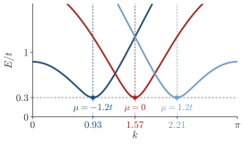
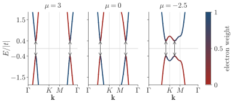
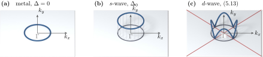
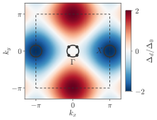

Page 6 of 16 of this session
5.9 An example of a gap that opens independently of the dispersion
Does the gap of a uniform pairing depend on the band structure, and what changes when \(\Delta(\mathbf k)\) has nodes? We will now see that a uniform \(\Delta\) opens a full gap for any dispersion and any chemical potential inside the band. For a \(\Delta(\mathbf k)\) that depends on momentum, one Fermi surface has three possible outcomes, which are a metal, a full gap and a nodal superconductor.
\[E(\mathbf k) = \pm\sqrt{\varepsilon(\mathbf k)^2 + |\Delta(\mathbf k)|^2}. \tag{5.9}\]
This is the quasiparticle energy of Section 5.8, the eigenvalues of the BdG matrix of one band. Here \(\varepsilon(\mathbf k)\) is the band measured from the chemical potential, and \(\Delta(\mathbf k)\) is the pair amplitude.
Equation (5.9) already tells us where the gap opens. For a uniform \(\Delta\) the gap opens at the minimum of \(E(\mathbf k)\), which is where \(\varepsilon(\mathbf k) = 0\), so on the original Fermi surface, and the smallest quasiparticle energy there is \(|\Delta|\). Nothing in this argument depends on the details of \(\varepsilon(\mathbf k)\), such as the range of the hopping, the lattice geometry or the position of the chemical potential.
For concreteness, let us take the single-orbital square lattice with \(\varepsilon(\mathbf k) = -2t\left(\cos k_x + \cos k_y\right) - \mu\), as in (2.14). We choose a chemical potential such that the electron band, which is the physical one, and its spurious mirror, the hole band, cross. When we turn on a constant \(\Delta\), a gap of size \(2|\Delta|\) opens at every such crossing, for any choice of the chemical potential along this dispersion. This is what Schematic 5.8 shows for a chain and three chemical potentials. The curve moves and the Fermi momentum moves, and the minimum of \(E(k)\) stays at \(|\Delta|\).

g2_swave_chain_mu.py
The same statement holds if we do the calculation on the triangular lattice instead of the square lattice. As we move the chemical potential across the band of the triangular lattice, a uniform \(\Delta\) still opens a gap everywhere the physical and the spurious bands cross, as Schematic 5.9 shows for three chemical potentials. This is the general signature of conventional superconductivity, which is fully gapped, since a uniform \(\Delta(\mathbf k)\) that does not depend on momentum always gaps the whole Fermi surface, regardless of the microscopic details.

g2_swave_triangular_mu.py
h.add_pairing(mode="swave", delta=0.4) of the notebook, computed with pyqula along \(\Gamma\), \(K\), \(M\), \(\Gamma\) for three chemical potentials. The energy is in units of the hopping \(|t|\), and the color is the electron weight. In pyqula the hopping is \(+1\), so the band runs from \(-3\) at \(K\) to \(6\) at \(\Gamma\), and h.add_onsite(x) is the chemical potential \(\mu=-x\). For \(\mu=3\) and \(\mu=0\) the electron and the hole band cross between \(\Gamma\) and \(K\) and between \(M\) and \(\Gamma\), and for \(\mu=-2.5\) on both sides of \(K\). A gap opens at every crossing, and the smallest energy is \(|\Delta|=0.4\) in the three cases. Look at where the arrows sit, since they move with \(\mu\) while their length \(2|\Delta|=0.8\) stays the same.Notebook check-in: session5.ipynb, “Superconductivity, full spectral function and electron spectral function” (Core), and “The impact of superconductivity in an electronic structure” (Challenge)
Reproduce the square-lattice example above. Plot the spectral function of the electron sector with \(\Delta = 0\), where there are two crossing copies, and then with \(\Delta \ne 0\), where a gap of size \(2|\Delta|\) opens at the crossing, as in (5.9). Repeat this for the triangular-lattice dispersion and check that the gap opens regardless of where you put the chemical potential.
5.10 Metal, gapped and nodal superconductor for one Fermi surface
Not every pairing function \(\Delta(\mathbf k)\) is independent of momentum, and this gives more interesting cases. For a given electronic dispersion \(\varepsilon(\mathbf k)\) there are in general three qualitatively different outcomes.
No superconductivity (\(\Delta = 0\)). This is a metal, which is gapless everywhere on the Fermi surface.
Conventional (s-wave) superconductivity. Here \(\Delta(\mathbf k) \ne 0\) everywhere on the Fermi surface, so \(E(\mathbf k)\) in (5.9) stays away from zero everywhere, and there is a full gap.
Unconventional, nodal superconductivity. Here \(\Delta(\mathbf k)\) vanishes along some lines or points of the Brillouin zone. Wherever the Fermi surface crosses one of these nodal lines, \(E(\mathbf k) = 0\) even though \(\Delta \ne 0\) nearby. The system is gapped in most of reciprocal space, but it stays gapless, which means metallic, at isolated momenta or along nodal lines.
On one Fermi surface the smallest quasiparticle energy is set by the pairing on that surface,
\[\min_{\mathbf k} E(\mathbf k) \approx \min_{\varepsilon(\mathbf k)=0}|\Delta(\mathbf k)| .\]
This is exact for a uniform \(\Delta\) and for a node on the Fermi surface, where both sides vanish. It is close when \(\Delta(\mathbf k)\) changes slowly with the band energy within an energy \(|\Delta|\) of the Fermi surface, \(|\partial\Delta/\partial\varepsilon|\ll1\) there. So \(\Delta=0\) gives a metal, a \(\Delta(\mathbf k)\) with no zero on the Fermi surface a full gap, and a zero on it a nodal superconductor.
The left side is never larger than the right side, since \(E=|\Delta|\) on the Fermi surface. Take the extended \(s\)-wave \(\Delta_0(\cos k_x+\cos k_y)\) at \(\mu=-t\), where \(\partial\Delta/\partial\varepsilon=-\Delta_0/2t\). For \(\Delta_0=t\) the smallest energy is \(0.447\,t\), against \(0.5\,t\) on the Fermi surface. For \(\Delta_0=0.1\,t\) it is \(0.0499\,t\) against \(0.05\,t\), so the two agree when \(\Delta_0\ll t\).

Figure 5.2 shows the three cases next to each other, in the Brillouin zone and as the gap along the Fermi surface. The Fermi surface is the only place where the gap can be read at all. The high-temperature cuprate superconductors are the standard example of scenario 3 in real materials. They are real superconductors, but their gap function has nodes, so parts of their Fermi surface stay gapless even in the superconducting state. This division into three cases holds for any lattice geometry, and the notebook checks it for the Fermi surfaces of the square and of the triangular lattice.
STM measures the tunneling conductance, which follows the electron density of states of the sample. In magic-angle twisted trilayer graphene, spectroscopic signatures of superconductivity appear in a density window that spans two to three holes per moiré unit cell. They are pronounced dips in the tunneling conductance at the Fermi level, with coherence peaks that are gradually suppressed at higher temperatures and magnetic fields. The authors write that the evolution of the conductance with doping is consistent with a gate-tunable transition from a gapped to a nodal superconductor. The measurement is in this article. Our reading, from the three cases above, is that a full gap leaves no states below the gap. A nodal gap leaves states down to zero energy, so the two give dips of different shapes.
The \(d\)-wave gap (5.13) vanishes on the diagonals \(k_x=\pm k_y\). A small Fermi pocket is centered at \(X=(\pi,0)\). Is the superconductor nodal?
\[\Delta_{d}(\mathbf k) = \Delta_0\left(\cos k_x - \cos k_y\right). \tag{5.13}\]
Show the answers
- A. ✗ False
This is false. Take \(\Delta_d=\Delta_0(\cos k_x-\cos k_y)\) and a pocket around \(X\). All its points have \(k_x\approx\pi\) and \(k_y\approx0\), so \(|\Delta_d|\approx2\Delta_0\) and \(E\) is close to \(2\Delta_0\) there. The nodes exist, but they are not on the Fermi surface.
- B. ✗ False
This is false. Four nodes appear for a pocket around \(\Gamma\), which the two diagonals cross in four points. A small pocket around \(X\) has \(|k_x|-|k_y|\approx\pi\), so it is far from the line \(k_x=\pm k_y\).
- C. ✓ True
This is true. Only nodes that cross the Fermi surface give gapless quasiparticles. Near \(X\) we have \(\cos k_x-\cos k_y\approx-2\), so \(E\) in (5.9) stays finite all around the pocket.

The \(d\)-wave gap \(\Delta_d=\Delta_0(\cos k_x-\cos k_y)\) in units of \(\Delta_0\), with a pocket of radius \(0.5\) around \(\Gamma\) and one around \(X\). The dashed square is the first Brillouin zone, so the pocket at \(X\) shows on both of its sides. The white diagonals are the nodes. They cross the first pocket in four points and miss the second one, where \(|\Delta_d|\) stays at \(1.88\Delta_0\), just below \(2\Delta_0\). \[E(\mathbf k) = \pm\sqrt{\varepsilon(\mathbf k)^2 + |\Delta(\mathbf k)|^2}. \tag{5.9}\]
Each curve is the quasiparticle energy \(E\) on one Fermi surface. It is drawn against the angle \(\theta\) around \(\Gamma\). The energy is in units of a fixed \(\Delta_0\). On the Fermi surface \(\varepsilon=0\), so
\[E=|\Delta(\mathbf k)|.\]
Which curve belongs to a nodal superconductor?
Show the answers
- A. ✗ False
This is false. The energy is \(\Delta_0\) at every angle, so the whole Fermi surface is gapped. This is a uniform s-wave pairing, a full gap.
- B. ✓ True
This is true. \(E\) vanishes at four angles, \(\theta=\pi/4\), \(3\pi/4\), \(5\pi/4\) and \(7\pi/4\), where the Fermi surface crosses the diagonals. This is the \(d\)-wave gap \(\Delta_0(\cos k_x-\cos k_y)\) on the square lattice at \(\mu=-t\), which reaches \(1.5\Delta_0\) on the axes.
- C. ✗ False
This is false. \(E=0\) at every angle, so nothing is gapped, and this is a metal with \(\Delta=0\). A nodal superconductor is gapped away from a few angles.
The square lattice has the band
\[\varepsilon(\mathbf k)=-2t(\cos k_x+\cos k_y)-\mu .\]
Which pairing gaps the Fermi surface for every \(\mu\) inside the band?
Show the answers
- A. ✓ True
This is true. A uniform \(\Delta_0\) has no zero, so \(E\geq|\Delta_0|\) on every Fermi surface. For \(\mu=-t\) and \(\Delta_0=0.2t\) the smallest energy is \(0.2t\).
- B. ✗ False
This is false. It vanishes on the diagonals \(k_x=\pm k_y\), and every Fermi surface of this band crosses them, at \(\cos k=-\mu/4t\). For \(\mu=0\) the Fermi surface passes through \((\pi/2,\pi/2)\), where \(E=0\).
- C. ✗ False
This is false. At \(\mu=0\) the Fermi surface is the curve \(\cos k_x+\cos k_y=0\) itself, so this pairing vanishes on the whole Fermi surface and \(E=0\) all along it.
Take the square lattice with \(\varepsilon(\mathbf k)=-2t(\cos k_x+\cos k_y)-\mu\) at \(\mu=-t\), and the \(d\)-wave gap \(\Delta_d(\mathbf k)=\Delta_0(\cos k_x-\cos k_y)\). Find the points of the Fermi surface where the quasiparticle energy vanishes.
Solution
The Fermi surface is \(\varepsilon=0\), so \(\cos k_x+\cos k_y=-\mu/2t=1/2\). The gap vanishes where \(\cos k_x=\cos k_y\), which is on the diagonals \(k_x=\pm k_y\). On a diagonal the condition of the Fermi surface is \(2\cos k_0=1/2\), so
\[\cos k_0=\frac14, \qquad k_0=1.318,\]
which is about \(0.42\pi\). The quasiparticle energy \(E=\sqrt{\varepsilon^2+|\Delta_d|^2}\) is zero at the four points \((\pm k_0,\pm k_0)\), with the four choices of sign, and nowhere else on the Fermi surface. The size \(|\Delta_d|\) of the pairing is largest where the Fermi surface crosses the axes, at \(\cos k_x=-1/2\) and \(k_y=0\) or the other way round, with \(1.5\Delta_0\) there.
These four momenta are where ARPES, which measures the gap along the Fermi surface, finds it closed, and they are the reason why a \(d\)-wave superconductor has states down to zero energy.
Notebook check-in: session5.ipynb, “Unconventional singlet superconducting orders” (Challenge), and “Gapped and nodal superconducting orders” (Core)
Build a \(\Delta(\mathbf k)\) that depends on momentum and vanishes along a line in the Brillouin zone, for example the d-wave form of Section 5.13 below. Then check numerically with (5.9) that the gap closes where the Fermi surface crosses this nodal line, which is different from the uniformly gapped case of Section 5.9.
Try it. In the cell, the function deltak(mode) plots \(\Delta(\mathbf k)\) for each order. At \(\mu=0\) the Fermi surface of the square lattice passes through \((\pi/2,\pi/2)\), where \(\cos k_x-\cos k_y=0\). Check that the \(d\)-wave map vanishes there and the \(s\)-wave map does not.
- In Section 5.13 the \(d\)-wave gap of the cuprates is the case where the nodes cross the Fermi surface.
- In Section 9.7 a non-magnetic impurity leaves the full gap of an \(s\)-wave superconductor almost unchanged, since it does not distinguish the two spins of a Cooper pair. A magnetic one instead gives a state inside the gap.
- In Section 9.8 a fully gapped bulk spectrum alone cannot tell a topological superconductor from a trivial one, and a vacancy can.